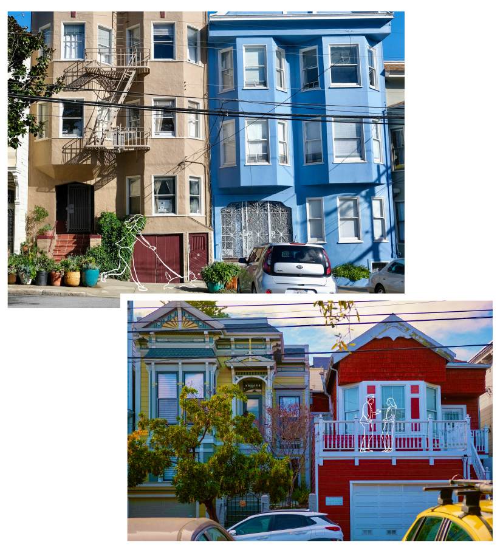
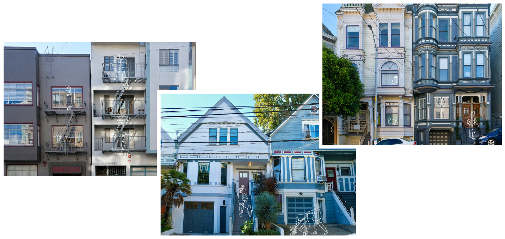

Lori Bongiovanni can recall the color of every home she has ever lived in. She has spent all 67 years of her life in San Francisco, residing everywhere from the Sunset District to Fillmore and now, Excelsior.
She even remembers some of the colors of her neighbors’ homes. She described a house that she used to pass daily when driving on the freeway to get to the city: a Victorian painted “shockingly pink.” A few years later, she saw it repainted a bright teal color. Now, it’s brown.
Many other houses have received similar treatment. Some city residents have gone as far as proclaiming a "gray-washing" of San Francisco, describing a trend where once-colorful residences are repainted gray.
Click on the pins below to see the representative house colors in each neighborhood:
The colors above represent the dominant hues observed in the houses collected from streets Washington St, Clay St, Sacramento St, and Hyde St.
The colors above represent the dominant hues observed in the houses collected from streets Grove St, Hayes St, Fillmore St, and Webster St.
The colors above represent the dominant hues observed in the houses collected from streets Noe St, 18th St, Hartford St, Chattanooga St, and 17th St.
The colors above represent the dominant hues observed in the houses collected from streets Church St, 22nd St, 23rd St, Chattanooga St, and Vicksburg St.
The colors above represent the dominant hues observed in the houses collected from streets Shotwell St, 25th St, 24th St, 26th St, and S Van Ness St.
Methodology and Data: Jupyter Notebook
The rows of Victorians that make up the city’s unique architectural landscape can be traced back to the population boom of the 1849 gold rush. Houses were painted white to disguise their wooden structure and later a battleship gray after the First World War. Then, the colorist movement during the 1960s ushered in a new era of color. Houses were painted bright greens, blues, and golds.
However, some experts say that San Francisco’s house colors meant something greater than paint to colorists.
“Going off into those wild color schemes was a way to say [the colorists] were not going to conform to the old way of doing things,” said Tanu Sankalia, a University of San Francisco professor specializing in the city’s architecture.
Bongiovanni echoed this sentiment, saying that her and her neighbor’s freedom to paint houses allows them to display their individuality. “It’s important for me to see different colors in the neighborhood,” she said. “I want to see their different personalities.”
She also said that the color cityscape is a source of pride, distinguishing her city from others in the U.S. Bongiovanni’s daughter and son-in-law live in Arizona, where she said the houses are “boring ... all painted either brown or gray.”
Also known as “Dr. Color,” Bob Buckter is one of the most famous color consultants in San Francisco. Over the course of 53 years, he has helped more than 20,000 clients paint their homes. He said he works with clients to gauge their tastes and find the house color that makes them happy. He has noticed more people painting their house shades of gray in the last few years.
When asked about the recent popularity of gray homes, his response was abrupt, as if he had rehearsed it.
“Gray is today. Gray is okay. Gray is great.” He laughed, explaining that he had been waiting for a chance to say that. “It’s just a trend.”
Some residents who have noticed the increase in gray houses say they believe they are repainted because it makes them easier to sell. Daniella Lubey, who has lived in the city for 13 years said, “There’s a psychology as to why a lot of the houses are now being turned gray – because it’s supposedly easier to sell to people who transplant into here.”
Steven Huang, co-founder and top producer for Ascend Real Estate, said he theorizes people are drawn to the gray because it makes older Victorians look more modern.
“[The] painting of Victorians and those [gray] colors actually bring out the features,” he said. “I think it makes the house look newer. And somehow stronger.”
But to some residents, this trend may have lasting consequences.
San Francisco native and muralist Marina Perez-Wong grew up in the Mission District, a neighborhood known for its vibrant art scene. She echoed Lubey’s sentiment attributing the trend to the influx of workers moving into the city.
“[Gray is] kind of devoid of soul. A lot of times, it's just structural. And there's not a whole lot of personality or movement,“ she said. “And if you look at it culturally, where I grew up, [there] were mostly Latin Americans and Asians. And we love the bright colors–it gives you the effect of happiness, of vibrancy, of life.”
Bongiovanni said that she felt pressured by the real estate trend to repaint her house gray. She recalled the “beautiful, grayish-lavender” that her family painted one former home, then later repainted that same shade because they loved it so much. But after it was sold, much of what she believes made the house uniquely beautiful was changed.
“We had to change a lot of our house, to make it according to the trend.”
The city itself does not prevent residents from repainting their houses according to their taste. “The Planning Code does not regulate the color of buildings,” city planner Kimberly Durandet wrote in an email. “We do conduct design reviews and consider materials and other design elements but not specifically color choices.”
Despite her disappointment, Bongiovanni says that this lack of regulation is part of what makes San Francisco’s colorful landscape possible. “It’s one of the uniquenesses of the city, that people are free to express themselves through the colors of their houses. San Francisco has that freedom. I hope it never goes away.”
Color Your Dream House